Why Christianity?
Religions that climb up, a God who came down
enough person?
be washed away?
after death?
These are questions everyone carries. Let us set the answers of the religions side by side, by the same measure, and honestly.
Do all religions say the same thing?
Both could be wrong, but both cannot be right
(Qur'an 4:157)
Compare through four questionsClose
Who is God?
- ChristianityOne personal God (Father, Son and Holy Spirit)
- IslamOne personal God, but not a Trinity
- HinduismMany gods, and behind them the ultimate reality, Brahman
- BuddhismDoes not posit a Creator who made the world
Who is Jesus?
- ChristianityGod who became a human being
- IslamA great prophet, but not God
- JudaismNot the Messiah they were waiting for
- HinduismOne among many teachers or incarnations
What comes after death?
- ChristianityWe die once, then resurrection and judgment
- IslamWe die once, then resurrection and judgment
- HinduismRebirth according to karma (samsara)
- BuddhismRebirth, which ends on entering nirvana
What is the "self"?
- ChristianityA person made by God, who goes on forever
- HinduismThe true self (atman) is one with Brahman
- BuddhismThere is no unchanging self (anatta)
- IslamA creature made by God, raised to life at the resurrection
On the most important questions, the religions answer differently, and sometimes in exactly opposite ways. So the saying "all religions are true" sounds generous, but in fact it tells every religion, "the thing you hold most important is wrong." If we truly respect one another, we have to begin by honestly calling different things different.
How do people try to reach God?
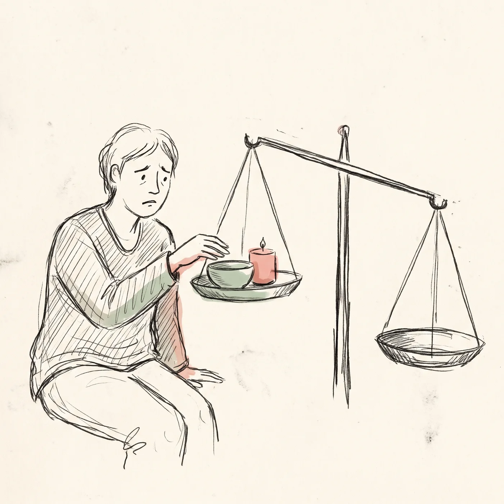
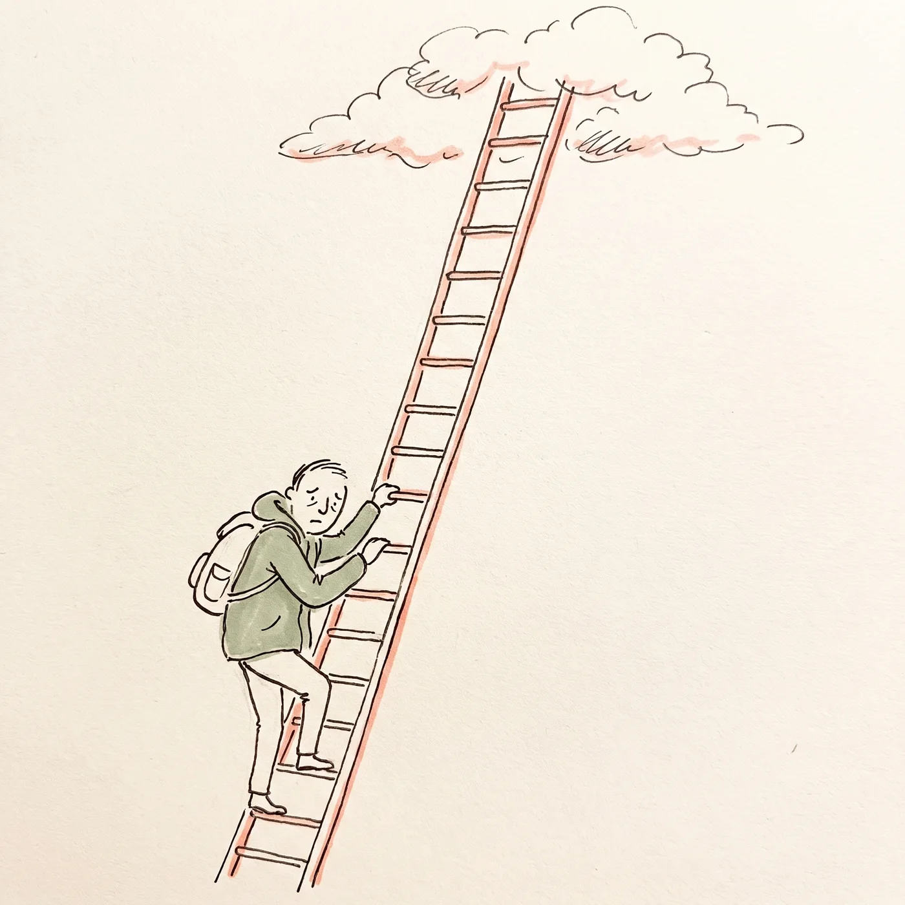
The methods differ, but the direction is the same — upward
The two paths in detail · by religionClose
① Bargaining with God. "If I pray this much, fast, give and live a good life, surely God will pay me back." Yet you can never know how much is enough, or which way the scale will tip in the end.
② Climbing on your own. This is the path of hardship and discipline, of training yourself again and again to become enlightened and break free. In the end, it is a person trying to reach a high place.
Buddhism
- Problem
- Suffering that comes from craving and ignorance; endless rebirth
- Goal
- Nirvana, the end of suffering and rebirth
- What to do
- The Noble Eightfold Path, moral precepts, meditation. At the end the Buddha said, "Be a lamp unto yourselves."
Confucianism
- Problem
- Lacking virtue; a heart that is not upright
- Goal
- To become a person of noble character, a sage. Closer to becoming fully human than to salvation
- What to do
- Cultivate body and mind, keep the rites, keep learning
Hinduism
- Problem
- A life bound by karma, repeating again and again
- Goal
- Liberation (moksha)
- What to do
- The path of action (rituals and duties), the path of knowledge, ascetic practice, the path of devotion. The path of devotion also speaks of the grace of a god
Islam
- Problem
- Forgetting God and not following him
- Goal
- To pass through judgment and enter paradise
- What to do
- The confession of faith, prayer five times a day, almsgiving, fasting, pilgrimage (the Five Pillars). It teaches that deeds are weighed on a scale on the Day of Judgment (Qur'an 7:8–9)
Judaism
- Problem
- Not following God's will
- Goal
- To remain within the covenant made with God
- What to do
- Keep the Law, and turn back when it is broken (teshuvah)
Pure Land Buddhism
- Problem
- In this degenerate age, no one can reach enlightenment by their own strength
- Goal
- To be reborn in the Pure Land of Amida Buddha
- What to do
- Call on Amida's name and trust his vow (faith in "other-power")
Christianity
- Problem
- Sin; being cut off from God
- Goal
- To be joined to God again; eternal life
- What to do
- Salvation is 100% God's work. There is nothing for us to add; we simply receive by faith what God has already done. And even that faith is not a merit, but an empty hand that receives a gift
Each dot shows a rough position, based on the representative teaching of each religion.
But there is one story that runs the other way
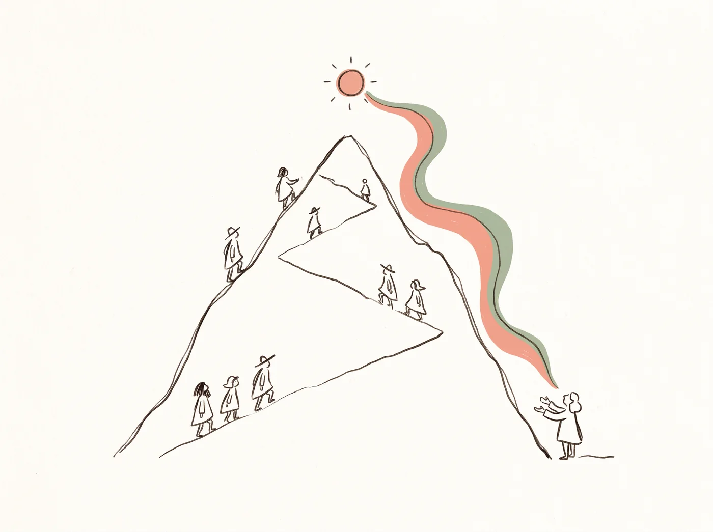
From the place of heaven, all the way down to the lowest place
What his coming down meansClose
It is not people climbing up; God came down. Not to a palace but to a stable, not as a master but as a servant, not to a throne of glory but all the way to a cross where criminals were hung.
Other religions also have stories of a god coming down to earth, such as the avatars of Hinduism. But those gods come as princes or heroes to defeat evil. A God who came to the lowest place to die in the place of sinners is found only in Christianity.
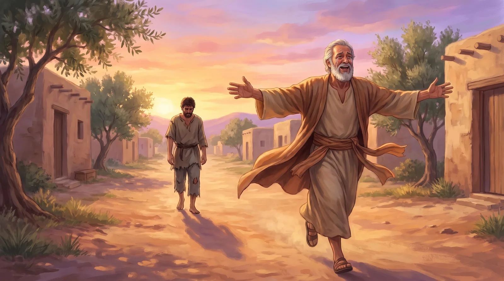
"Even as a hired hand…" — before he could finish
A story Jesus toldClose
The son who has wasted everything rehearses his speech on the way home: "Take me on as one of your hired hands." He will work to pay it back — the climbing path. But before the father even hears those words, he recognizes his son from far away and runs to him first and holds him tight.
Couldn't God just forgive?
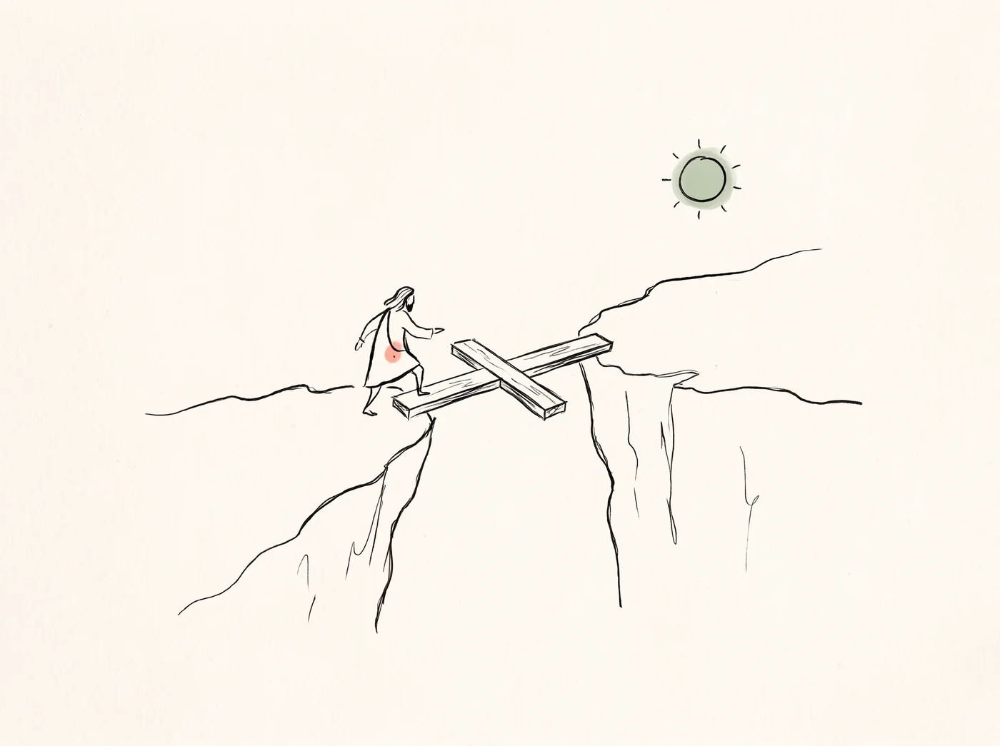
God spanned with the cross the gap no one could cross
The judge's story · where the price of sin goesClose
If someone harmed your family and the judge said "That's all right" and let them go, it would be hard to call that love. To simply cover it over would destroy justice; to simply punish would leave no room for love.
The law was upheld and the son went free. Justice and love were both fulfilled. Christianity says this is exactly what the cross is.
Where does the price of forgiven wrongs go?
Not a story, but something that happened
Christianity does not tell this as a myth or a parable. It is an event with a time and a place, so it can be examined as history — and Christianity stakes everything on that event.
Is Christianity exclusive?
Only one way, yet the widest door
Why it is the widest doorClose
First, let us honestly admit it: if Christianity has felt exclusive, the cold words and actions of Christians have played their part. That was not what Jesus is like. We are sorry.
Jesus said, "I am the way, the truth and the life" (John 14:6). Saying there is only one way sounds narrow. But look at what it takes to enter, and it looks different. At the door of good works or hard discipline, those with the strength and time to spare go first. The door of grace asks for no qualifications at all. A criminal, someone who came late, someone facing death — all enter by the same door. So did the thief beside Jesus on the cross (Luke 23:43).
He crossed the lines and went to them first
Who were they?Close
People of another nation, another faith; an officer of the occupying army; a tax collector scorned as a traitor to his people; a man condemned to death. Jesus crossed the lines people had drawn in his day and went to them first.
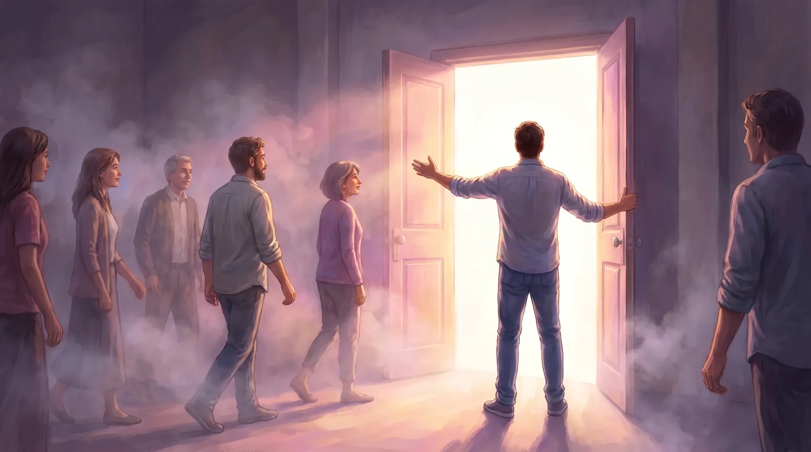
If there is only one exit, telling others is love
Why we share itClose
If someone who knows where the emergency exit is shouts, "This way!", we do not call that person arrogant. When Christians share Jesus, it should come from the same heart: not a wish to win, but a wish for everyone to live.
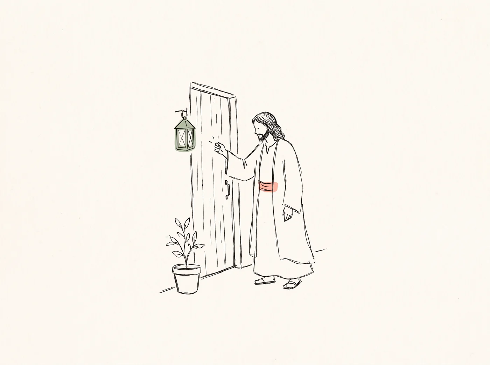
The door opens from the inside
A love that does not force the doorClose
Jesus does not break the door down. He knocks from outside and waits, because forcing it open would not be love. So Christians, too, should treat neighbors of other faiths with gentleness and respect (1 Peter 3:15–16).
How can you tell the real thing?
A real pearl is a jewel that grows out of a wound
Why do counterfeits appear?Close
Wherever there is something precious, imitations appear. No one bothers to counterfeit a pebble. Teachings that borrow the name of Christianity almost always say "grace alone is not enough" and add something, turning it back into a "climbing path."
A real pearl feels gritty when you rub it against your teeth. The real gospel feels gritty at first, too, because it begins by saying, "You cannot save yourself." But inside it is a love that was wounded in your place.
In one sentence
Other paths say
"Do this, and you can reach God."
Christianity says
"God has already come to you."
We will not press you to believe. Walk slowly along the road he walked. It is not too late to decide after that.
Things you only know by trusting
"I'll believe once I know" sounds reasonable. But in real life, much works the other way around. There are things you only come to know once you trust and take a step.
This is not blind faithClose
Someone learning to swim does not throw themselves into just any water. They trust themselves to the water because an instructor is beside them and they have seen others float. It is faith with good reasons.
Christian faith is the same. Events in history with a time and a place, people who bore witness at the cost of their lives, and the stories we have compared above — these are the reasons. Take a step on that ground, and what follows you will come to know not with your head but with your life. And the more you know, the deeper your faith grows.
So you don't need to know everything first. One step today is enough.
The God who came down
gathered people into one family
Believing in Jesus is not a road you walk alone. On that road there is the church.
How did the church begin?
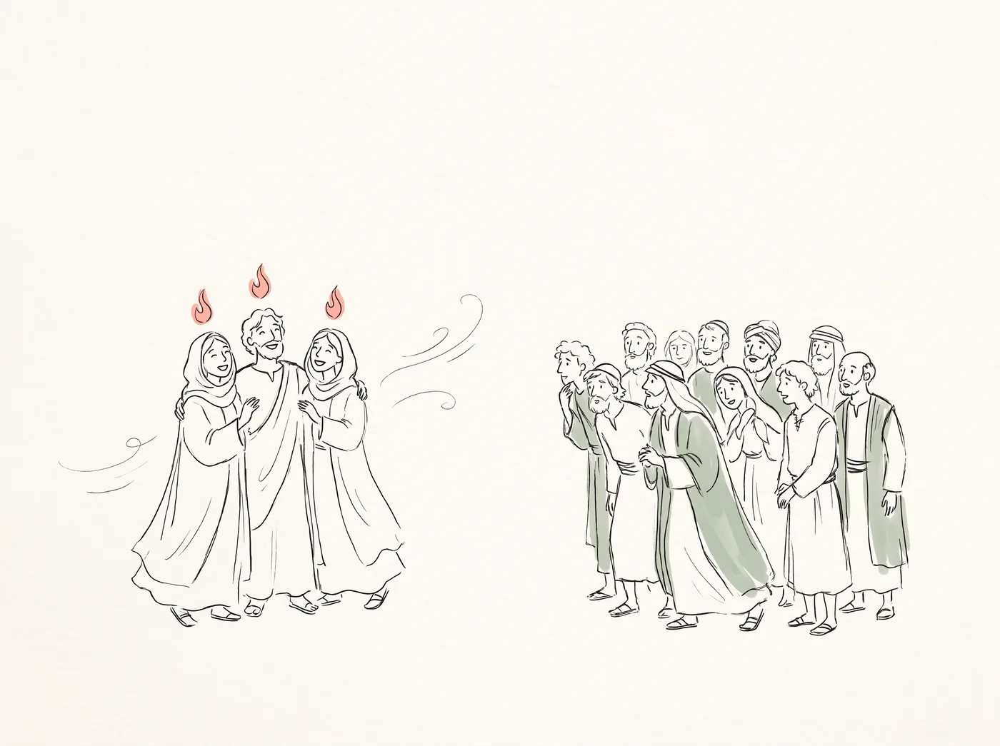
At Pentecost, the day the Spirit came, the church was born
- The callIn Galilee he called twelve disciples to be with him (Mark 3:14)Scene →
- The promise"On this rock I will build my church" (Matthew 16:18)
- The priceOn the cross he gave himself up for the church, and he rose again (Ephesians 5:25)Scene →
- The waitingAs he went up to heaven he said, "Wait for the Holy Spirit" (Acts 1:4–8)Scene →
- The birthAt Pentecost the Holy Spirit came, and that day three thousand people were baptized. The first church (Acts 2:1–41)
- The spreadFrom Jerusalem to Judea and Samaria, and to the ends of the earth (Acts 1:8). That church has come all the way to our own neighborhood today
What the word "church" meansClose
The word the New Testament uses for "church" (ekklesia) means "people called out and gathered together." So the church is first of all not a building but people. The church building is simply the house where those people meet.
The church is not a club that people started with good intentions. Jesus called it "my church" and built it himself, and the Holy Spirit came and breathed life into it.
What does the church do?
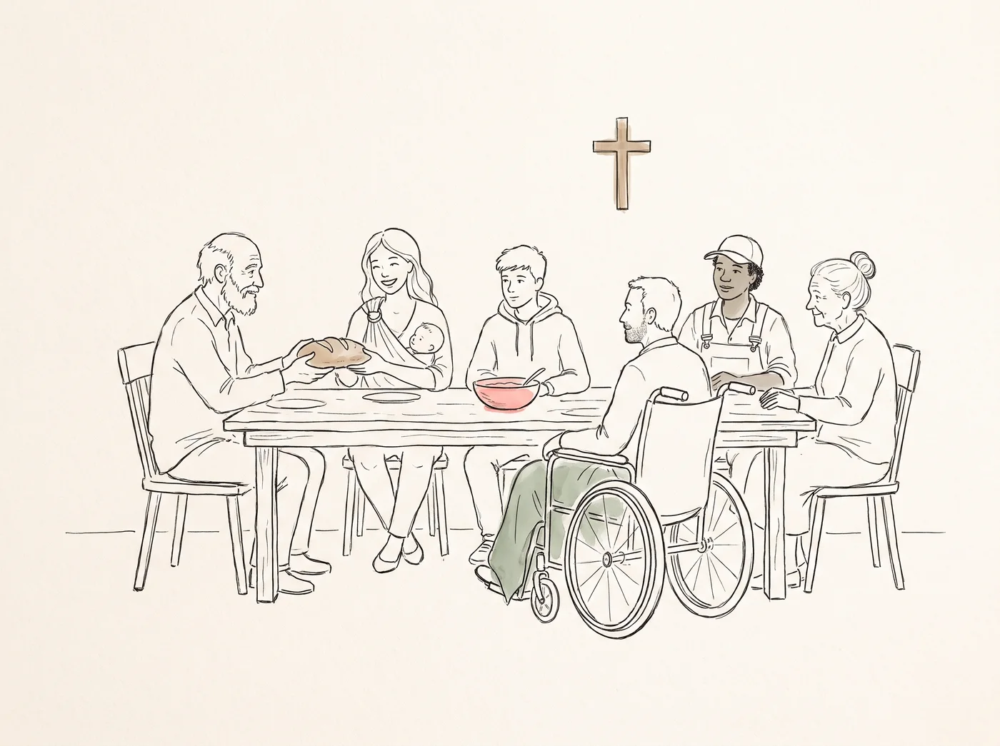
The church is not a building but people — the body of Jesus
How the first church livedClose
The church is the body of Jesus (1 Corinthians 12:27). Following the will of Jesus, its head, it becomes his hands and feet and carries on his work on earth. Baptism is the door into this family, and communion is the table where we remember the cross of Jesus together.
Isn't it enough to believe on my own?
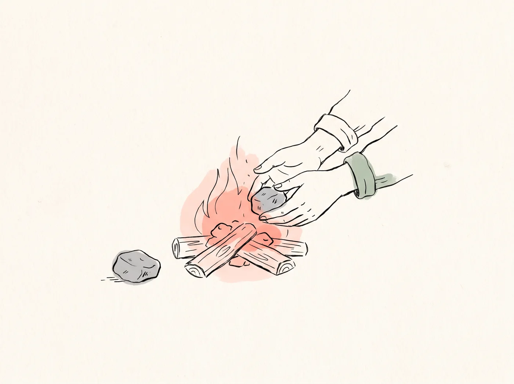
A coal taken from the fire grows cold on its own
Those words grieve Jesus
The church is the body of Jesus. To Saul, who was persecuting the church, Jesus did not say, "Why are you persecuting the church?" but "Saul, why are you persecuting me?" (Acts 9:4). When the church hurts, Jesus hurts.
Jesus gave his life for the church (Ephesians 5:25). If we look at the family he loved enough to die for and say, "I don't need them," how that must grieve him.
On the night before the cross, Jesus prayed for this: "Father, may they all be one" (John 17:21).
A finger cut off from the body cannot live long, however healthy it is. Faith is the same. Faith kept alone cools easily and loses its way easily. God made us to grow through one another.
If you have been hurt by a churchClose
If that has happened to you, we are truly sorry. The church is a gathering of people too, so it makes mistakes, and sometimes it wounds deeply.
But the church is not a showroom for perfect people; it is a hospital for people being healed. Jesus said, "It is not the healthy who need a doctor, but the sick" (Mark 2:17). A place where sick people gather and are healed by the same doctor — that is the church.
Please don't leave Jesus because of the people who hurt you. You can look again for a healthy church. We have written how below.
Which church should I go to?
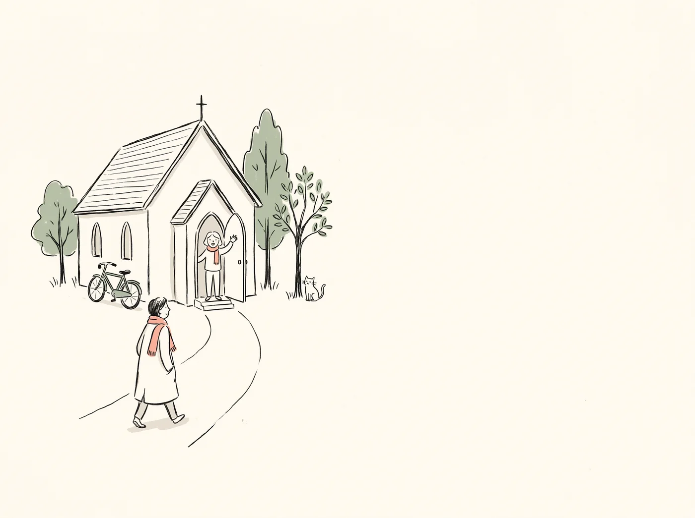
A healthy church is close by, and its door is open
How to go for the first time
- Look up two or three churches near your home. Check their name and denomination.
- Just go to a Sunday service. It's fine to sit at the back. Everyone feels a little awkward the first time.
- Ask about the welcome for newcomers. You can ask anything you are curious about.
- Attend for a few weeks and look at it with the O·X table above.
- Join a small group and walk together. That is where the church becomes family.
If you are worried about false groupsClose
If someone approaches you on the street saying "Could you fill in a survey?", "We offer free personality tests" or "There's a great Bible study," but won't say clearly which church they are from, be careful. It is best to avoid any group that does not give its church name and denomination from the start.
When you are unsure, ask the pastor of a church near you, or your denomination's office. A healthy church welcomes questions like these.
There is a family waiting for you
Jesus does not leave you to walk alone. This Sunday, try knocking on the door of a church near you.
Pictures: made with AI and refined by people. Bible passages are this app's own fresh renderings. Each religion is described by a short summary of its representative teachings; to go deeper, we encourage you to hear from that religion's scriptures and from its believers themselves.
© SSSOFT